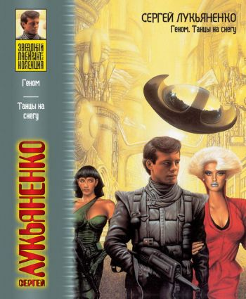

|

Геном - цикл фантастических произведений Сергея Лукьяненко, включающий романы «Танцы на снегу» и «Геном», а также повесть «Калеки».
Книги:
Танцы на снегу:
Действие происходит в конце XXI или начале XXII века. Уже произошёл выход человечества в дальний космос, образовалась Империя, произошли контакты и первые столкновения с инопланетянами. Женщины могут летать в гиперканале только в анабиозе — из-за отсутствия Y-хромосомы женщина, оказавшаяся в гиперканале в нормальном состоянии, неизбежно гибнет. Обычные компьютеры при полёте в гиперканале не работают, поэтому для осуществления сверхсветовой навигации используется человеческий мозг — люди нанимаются на корабли в качестве расчётных модулей. Всё время перелёта они находятся в бессознательном состоянии, пока их мозг используется для выполнения вычислений.
Роман рассказывает историю 14-летнего Тиккерея Фроста (Тики), уроженца планеты Карьер — космического рудника. После смерти родителей Тики нанимается на корабль расчётным модулем, чтобы вырваться с планеты, где его не ждёт ничего хорошего. Познакомившись на планете Новый Кувейт с агентом организации фагов (чрезвычайно напоминающей орден джедаев из Звёздных войн) по имени Стась, Тики оказывается вовлечён в политические события, результатом которых становится поражение альянса Инея и пресечение попытки группы клонов Эдуарда Гарлицкого стать во главе человечества.
Геном:
Действие происходит в середине или второй половине XXII века. Сюжет никак не связан с событиями первой книги, романы объединяет только мир и личность давно умершего великого генетика Эдуарда Гарлицкого, который появляется в действии в виде информационного слепка с личности, хранящегося в гель-кристалле и живущего в нём в собственном виртуальном мире.
Главный герой второй книги трилогии — пилот-спец Алекс Романов. Волей случая он оказывается в роли капитана туристической яхты «Зеркало», предназначенной для перевозки туристов-инопланетян. В рейсе на корабле происходит убийство — убита туристка-чужая, наследная принцесса расы цзыгу. Поскольку смерть принцессы произошла на человеческом корабле и в зоне, контролируемой людьми, цзыгу считают людей виновниками гибели правительницы и объявляют человечеству войну. В результате этой войны человечество, даже победив, окажется в незавидном положении — либо полностью обескровленным, либо восстановившим против себя всех инопланетян. Чтобы остановить войну, следователю-спец Питеру Ка-сорок четвёртому Вальку и Алексу необходимо не более чем за трое суток выявить среди членов экипажа убийцу и отдать его для казни цзыгу.
Калеки:
Прошло около пятнадцати лет после событий «Генома». Алекс Романов — капитан корабля, командир небольшой команды профессионалов, специализирующихся на «обуздании» кораблей, по какой-то причине вышедших из-под контроля (обычно вследствие технических неисправностей оборудования или из-за того, что интеллект корабельного компьютера отказывается повиноваться приказам).
Команда Романова получает весьма необычное задание. Наниматели заказали халфлингам новый боевой корабль, но позволили себе бестактность — попытались торговаться с поставщиком, понадеявшись на то, что детально прописанные в контракте требования к качеству не позволят обиженным халфлингам сделать что-либо неприемлемое. Поставщик точно выполнил все требования и поставил великолепный корабль, но нашёл в контракте лазейку. Компьютер корабля был запрограммирован на повышенные требования к экипажу. Если экипаж не может подтвердить соответствие этим требованиям, корабль отказывается подчиняться ему. Для подтверждения каждому экипажу даётся только одна попытка. Критерий пригодности: экипаж должен спасти корабль в такой ситуации, которую сам корабль расценивает как безнадёжную.
|